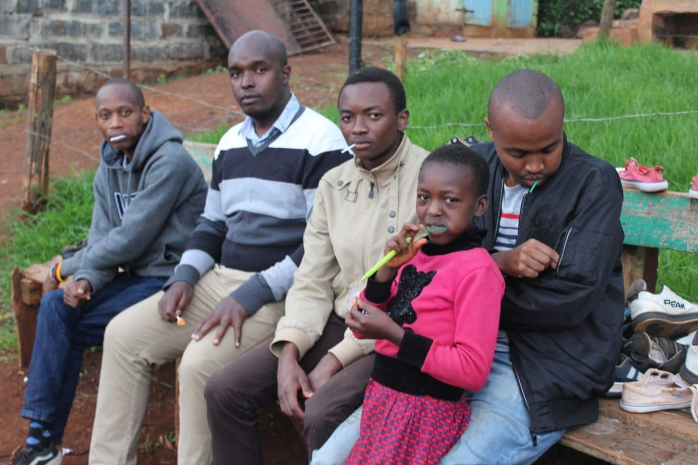

Ronnie Leon
Biomedical Engineering Student + Certified Routing & Switching Engineer + Front end developer
As an aspiring Biomedical Engineering, I have ambitions to revolutionize the health juncture in my country Kenya. I'm equally an aspiring technocrat. My ambition is to pioneer new technologies essential for the health juncture.
I’m also exploring the field of business. Together with my folks we run a stationery business, "Nexttgen Printers and Suppliers"
Featured Projects
View selected projects below.
Apollo Stair Climbing Wheelchair
Pioneered the development of the Apollo Stair Climbing Wheelchair together with my fellow Biomedical Engineering Students. We used several technologies that were open to the public to design, develop and assemble the stair climbing wheelchair. Abraham, my fellow colleague and I were responsible for the design of the stair climbing wheelchair.

Gathiga Children's Home Refurbishment
Together with the Deutsch Klub 254 we were able to organise for a programme to go to Gathiga Children's home and refurbish it. This included helping in the renovation of their structures, clean their compounds, clean their clothes and beddings, collecting and preparing firewood and preparing a sumptuous meal for the young ones.
Stem cell therapy
Developed a pancreas from umbilical mesenchymal stem cells. Research indicates that there are stem cellwhich are found in the umbilical cord and equally within our bodies. The stem cells are able to differentiate into specific organs, tissues or cells if the correct genetic sequence that codes for the function of the respective organ is injected. For instance the liver is responsible for deamination and detoxification. The project was able to reach the regionals level at the Kenya Science and Engineering Fair
Work Experience
Front-end Developer
Freelance
August 2020-Present
Provides front-end related services
Salesman
Nexttgen Printers & Suppliers
April 2020 - August 2020
Managed all the sales work for Nexttgen Printers & Suppliers Ltd
Key contributions:
- Responsible for marketing the products offered by Nexttgen Printers & Suppliers.
- Created company letter heads and company profile.
- Ensured goods ordered were delivered on time and at the right place
For further information visit LinkedIn
Fruit Vendor
Self employed
June 2020 - August 2020
Started the business venture together with three other friends.
Key contributions:
- Responsible for sourcing the fruits.
- Selling fruit salad and fruit juices.
- Responsible for the analysis of the business in terms of business gains and projected gains.
Education
Kenyatta University.
Second Year Biomedical Engineering Student.
I have been able to acquire several skills in my academic journey pursuing Biomedical Engineering including: C & C++ programming languages & Engineering Drawing.
Grade: Incomplete.
Goethe Institut
I learnt Deutsch language right from the beginners level A1 to A2. I have an elementary understanding of the German language and culture.
Huawei ICT Academy
April 2020
Huawei Routing & Switching Certification awarded to me by Huawei Technologies.
LinkedIn Learning Software Development Course.
August 2020-Septmeber 2020
Learnt several programming languages including Python, Java, JavaScript & C#. I also learnt Front end development with tools such as HTML & CSS and web security measures. I also learnt Database administration and querying with SQLite.
Awarded several certificates on Learning HTML,CSS,JavaScript, Java, Python & C#
Cardinal Otunga High School Mosocho
Kenya Certificate of Secondary Education 2018 Mean Grade: A-
I participated in Science Club and played socccer. I also participated in the annual Chemistry contest and was highly congratulated for remarkable results. I received several certificate having participated in several co-curricular activities.
Unity Primary School.
Kenya Certificate Primary Education 2014 Mean Grade: B+
Hobbies
Cycling
I'm an adventure enthusiast. I have managed to make a couple of rides: Kahawa Sukari-Sagana, Juja-Ol-Donyo Sabuk & Syokimau-Bisli,Kajiado.

Motorsports
I have participated in Motorsports at Whistling Morans, Athi River, Kenya. I indulged in gokarting and speed bike riding. I'm a motorsports enthusiast.

Football Playing
I fancy playing football during my leisure time.
Reading journals and inspirational books and learning emerging technologies
Being an aspiring technocrat I follow up on new and emerging technologies in the technological world. I also read inspirational books for example 7 habits of the highly effective people by Stephen R Covey to get some inspiration and the urge to be better each day the sun rises.
Coding
I have this drive in me to be proficient in programming languages such as C++ & Python since these are the tools that I will utilise later on to implement some of the projects I will embark on in the future such as embedded system.